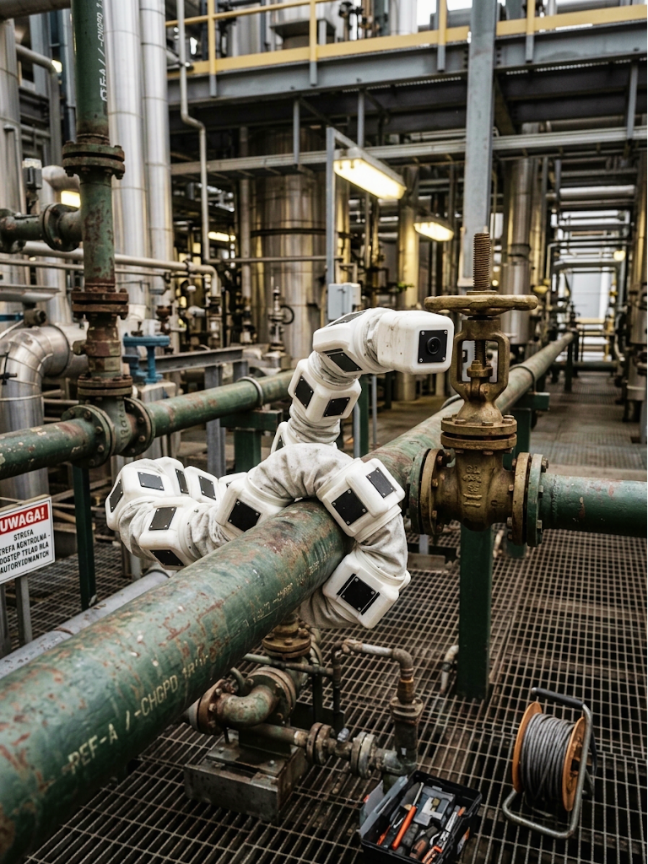

Petrochemicals
INSPECTION
Gizmo in worm-like configuration, enabling crawling on pipelines to monitor state of the structures

Modular building block for task-specific robots
Automation should address the day-to-day needs of a growing operation without turning the way it works upside down.
A shortage of qualified workers can make it harder to keep your operations running smoothly.
Harvesting, transport and other physical tasks take time that a team could spend on other responsibilities.
Automation should work with the conditions and layout of the site where it will be used.
Gizmo — modular robotics designed for repetitive tasks and existing infrastructure.

An automation and robotics engineer from Warsaw University of Technology, currently studying at the University of Oslo. He works on low-level software and electronics. Professionally, he has worked on control systems, measurement setups, and data-acquisition automation, collaborating with organizations including CERN

An automation and robotics engineer from Warsaw University of Technology, currently continuing his studies at the master’s level in the same field. Professionally, he designs control and automation systems, gaining experience in areas such as the refining industry, building automation, and industrial machinery.
An automation and robotics engineer with a master’s degree in computer engineering, specializing in data engineering, with both degrees completed at Warsaw University of Technology. She works with computer vision, machine learning, and AI applications in image analysis, including in collaboration with the IDEAS Research Institute. She combines her technical skills with experience in social media, taking care of our public image.
A finance and accounting student at the University of Warsaw, previously studying computer science at the Technical University of Munich. She focuses on business development, communication, and organizational management. She has previously worked with WARR e.V. and she.codes, where she was responsible for partnerships, event organization, and growth strategy.
An aerospace and satellite engineering graduate, currently studying electronics and telecommunications. He designs and commissions electronic systems, combining hardware with low-level software.
An automation and robotics engineer from Warsaw University of Technology, currently continuing his studies at the master’s level in the same field. He works with automation, robotics, and mechatronic systems. He has experience in assembling, commissioning, and programming industrial equipment.